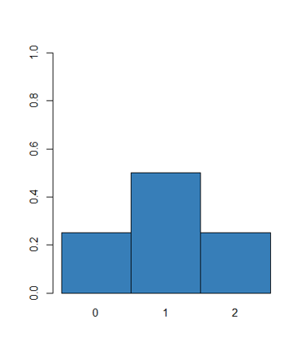

Chapter 7 Populations
2장 통계의 개념을 설명하면서 다음과 같은 그림을 설명했습니다. 모집단은 우리가 관측할 수 없는 전체집합이고 그 중 샘플링을 통해 표본과 표본의 대표값을 구하고 이 대표값으로 모집단의 대표값이나 분포를 추정하는 것이 통계 입니다. 본 장에서 새로 등장하는 개념은 확률변수 (Random variable) 입니다. 이번 강의에서는 확률변수의 개념을 확실히 이해하고 이에 따른 확률과 분포의 개념도 정립하는 시간을 갖도록 합니다.

7.1 Random variable
확률변수는 변수와 같지만 데이터가 들어있지 않은 빈 공간으로 보면 되며 population의 데이터가 들어올 가능성만을 갖는 변수로 이해하면 되겠습니다. 즉, population의 어떤 데이터도 샘플링되어 들어갈 수 있지만 아직 들어가 있지 않은 상태이며 따라서 특정 값이 들어갈 수 있는 경우의 수, 즉 확률만이 존재하므로 확률 변수라고 합니다.
경우의 수는 임의 시행에서 어떤 사건이 일어날 수 있는 가짓수를 말하며 사건 E가 일어날 경우의 수는 \(n(E)\) 로 나타냅니다. N을 모든 경우의 수가 일어날 수 있는 가짓수라 할 때 확률의 정의는 아래와 같습니다.
\[ P(E) = \frac{n(E)}{N} \]
가짓수를 구할 때 두 사건 A, B가 동시에 일어나지 않는 경우, 즉 사건 A 또는 사건 B가 일어나는 경우의 수는 합의 법칙에 의해 두 경우의 수를 더해주고 두 사건이 동시에 일어날 때, 즉, 사건 A에 연이어 (동시에) 사건 B가 일어나는 경우의 수는 곱의 법칙에 의해 두 경우의 수를 곱해줍니다 .
만약 모든 사건이 동일 확률로 일어나고 총 사건이 한정적이라고 가정하면 다음과 같은 규칙이 적용 됩니다.
\[ \begin{split} P(E) & > 0 \\ \sum_{All} P(E) & = 1 \\ P(A \cup B) & = P(A) + P(B) - P(A ~ \cap ~ B) \end{split} \]
여기서 만약 사건 A와 B가 배반사건 일 경우 A 또는 B가 일어날 확률은 \(P(A) + P(B)\) 이며 만약 두 사건이 독립일 경우 A와 B가 동시에 일어날 확률은 \(P(A)P(B)\) 입니다. 독립이라는 것은 하나의 사건이 일어날 확률이 다른 사건이 일어날 확률에 영향을 주지 않는 경우를 말합니다.
다음 예에서 한 사람을 선택할 경우 그 사람이 남자일 확률, 그 사람이 heavy smoker일 확률, 그리고 남자이거나 heavy smoker 일 확률을 각각 구하시오
library(UsingR)
tbl <- xtabs(~Sex + Smoke, data=survey)
tbl
#
sum(tbl)
#P(Male)
margin.table(tbl, 1)/sum(tbl)
#P(Heavy)
margin.table(tbl, 2)/sum(tbl)위 survey 데이터에서 Univariate 경우만을 생각해 보고 이 때 Random variable 의 개념을 알아봅니다.
survey의 smoke를 pupulation 데이터라고 가정하고 \(X\)를 해당 population에서 랜덤하게 sampling 한 변수라 하면 (확률 변수) \(X\) 가 가질 수 있는 값은 4가지 입니다. 그러나 확률변수는 실제 값을 가지고 있지 않고 확률만을 가질 수 있으므로 \(P()\)를 사용하여 \(P(X)\) 라고 표현합니다. R 코드를 이용하여 다음 확률들을 구해봅시다.
\[ P(X=\text{"Never"}) = \\ P(X=\text{"Heavy"}) = \\ P(X=\text{"Occas"}) = \\ P(X=\text{"Regul"}) = \]
7.2 Discrete random variable
\(X\) 를 이산형 확률변수라 하면 \(X\)가 가질 수 있는 값은 \({0, 1, ..}\) 또는 \({"yes", "no"}\) 등의 이산형 값을 가질 수 있으며 이 값들을 \(x\)라 하면 \(P(X=x)>0\) 이며 \(X\)의 분포는 이러한 확률들을 나열한 것으로 생각하면 됩니다. 즉, 이산형 확률변수 \(X\)의 분포는 먼저 가능한 \(x\)의 값들을 구한 후 \(P(X=x)>0\)이고 \(\sum_x{P(X=x)}=1\)인 확률 \(P(X=x)\)의 값들을 명시하면 됩니다.
동전 한 번 던지기, 가능한 경우의 수는? 확률 변수는? 분포는?
\[ P(X=0) = 1/2 \\ P(X=1) = 1/2 \]
주머니에서 공 꺼내기 (G+R=N), 반복 허용해서 두 번 뽑을 때, \(X\)를 빨간 공의 갯수라 하면, 가능한 경우의 수는? 분포는?
\[ \begin{split} P(X=0) & = G/N \times G/N \\ P(X=1) & = R/N \times G/N + G/N \times R/N\\ P(X=2) & = R/N \times R/N \\ \end{split} \]

7.2.1 Probability mass function
그러나 확률 변수의 분포를 언급할 때마다 일일이 확률을 명시할 수 없으므로 이러한 확률을 나타내는 함수를 정의하여 사용할 수 있고 이를 확률 질량 함수 (probability mass function, PMF)라 합니다.
앞서 동전 던지는 예제에서 PMF는?
\[ f_X(x) = \begin{cases} \frac{1}{2} ~~~~~ \text{where} ~ x \in \{0, 1\} \\ 0 ~~~~~~ \text{where} ~ x \notin \{0, 1\} \end{cases} \]
7.2.2 Mean and standard deviation of discrete R.V.
Dataset에서는 평균과 분산이 각각 center와 spread를 나타내는 대표값이였으나 확률 변수에서는 그 정의가 달라집니다. 모평균 (population mean)은 \(\mu\)로 나타내며 확률 변수 \(X\)에 대한 평균은 기댓값 (expected value)으로 불리우며 기호로는 다음과 같이 \(E(X)\)로 나타낼 수 있습니다.
\[ \mu = E(X) = \sum x P(X=x) \\ \] 이는 가중평균으로 모든 \(x\) 값들에 대해서 \(P(X=x)\)의 가중치를 비율로 곱한 후 더하면 됩니다. 참고로 기댓값은 다음과 같은 선형적 성질을 가지고 있습니다.
- 가산성 \(E(X+Y) = E(X) + E(Y)\)
- 동차성 \(E(cX) = cE(X)\)
주사위를 한 번 던질 때 나올 수 있는 주사위의 수의 기댓값? (확률변수 \(X\)?, 확률변수의 분포?, 확률변수의 기댓값?)
- 확률변수: 주사위를 한 번 던질 때 나올 수 있는 주사위의 수
- 가능한 경우의 수: {1, 2, 3, 4, 5, 6}
- 확률 변수의 분포:
\[ \begin{split} P(X=1) & = 1/6 \\ P(X=2) & = 1/6 \\ P(X=3) & = 1/6 \\ P(X=4) & = 1/6 \\ P(X=5) & = 1/6 \\ P(X=6) & = 1/6 \\ \end{split} \]
- PMF:
\[ f_X(x) = \begin{cases} 1/6 ~~ \text{where} ~~ x \in \{1,2,3,4,5,6\} \\ 0 ~~ \text{where} ~~ x \notin \{1,2,3,4,5,6\} \end{cases} \]
- 기댓값:
모평균은 \(\mu\)로 표현하며 다음과 같이 정의할 수 있습니다.
\[
\begin{split}
\mu & = E(X) \\
& = \sum_x{xP(X=x)} \\
\end{split}
\]
모표준편차는 \(\sigma\)로 표현하며 다음과 같이 정의할 수 있습니다 \[ \begin{split} \sigma^2 & = VAR(X) \\ & = E[(X-\mu)^2] \\ & = E(X^2 - 2\mu X + \mu^2) \\ & = E(X^2) - 2\mu E(X) + \mu^2 \\ & = E(X^2) - E(X)^2 \\ & = \sum_x{x^2 P(X=x^2)} - (\sum_x{xP(X=x)})^2 \end{split} \] 즉, 이 값은 \((X-\mu)^2\)의 기댓값과 같습니다.
주머니에서 공 꺼내기 (G+R=N), R을 빨강공의 갯수, G를 녹색 공의 갯수라 하고 N을 총 공의 갯수라 하자. 반복을 허용해서 두 번의 공을 뽑을 때 빨간 공의 갯수를 확률변수 \(X\)라 하자. \(X\)의 분포는? \[ \begin{split} P(X=0) &= \frac{G}{N} \times \frac{G}{N} \\ P(X=1) &= \frac{G}{N} \frac{R}{N} + \frac{R}{N} \frac{G}{N} = 2 \frac{GR}{N^2} \\ P(X=2) &= \frac{R}{N} \frac{R}{N} = \frac{R^2}{N^2} \end{split} \]
기댓값과 분산을 구하시오 \[ \begin{split} E(X) &= 0 \times P(X=0) + 1 \times P(X=1) + 2 \times P(X=2) \\ & = 2 \frac{G}{N}\frac{R}{N} + 2(\frac{R}{N})^2 \\ & = 2 \frac{(N-R)R}{N^2} + 2 \frac{R^2}{N^2} \\ & = 2 \frac{NR}{N^2} - 2 \frac{R^2}{N^2} + 2 \frac{R^2}{N^2} \\ & = 2 \frac{R}{N} \\ \end{split} \] \[ \begin{split} VAR(X) &= E[(X-\mu)^2] \\ & = E(X^2) - E(X)^2 \\ & = 2 \frac{G}{N}\frac{R}{N} + 4(\frac{R}{N})^2 - (2\frac{R}{N})^2 \\ & = 2 \frac{G}{N}\frac{R}{N} \end{split} \]
7.3 Continuous random variable
연속 데이터의 경우에는 \(P(X=x)\) 와 같은 개념이 불가능하므로 다른 방식의 확률에 대한 정의가 필요합니다. 이 경우에는 \(P(a < X \le b)\) 와 같은 확률의 범위를 지정하는 방식이 쓰입니다. 이는 \(F(b) = P(X<b)\) 함수나 \(P(a < X \le b)\) 와 같은 크기에 해당하는 a, b, 그리고 \(f(x)\)로 둘러쌓이는 함수 \(f(x)\)로 구현될 수 있습니다. 위 함수 \(f(x)\)를 확률변수 \(X\)의 밀도라 하며 \(F(x)\)와의 관계는 다음 그림과 같습니다.
library(tidyverse)
fx <- function(x, mu, sigma){
(1/(sigma*sqrt(2*pi)))*exp(-1*((x-mu)^2)/(2*sigma^2))
}
x <- seq(-5, 5, 0.01)
y <- fx(x, 0, 1)
z <- data.frame(x, y)
plot(x=x, y=y, type="l");
## basic graphical function
myx <- seq(0,1,0.01)
myy <- fx(myx, 0, 1)
plot(x=x, y=y, type="l")
polygon(x=myx, y=myy, col="red")
##
myx <- seq(0,1,0.01)
myy <- fx(myx, 0, 1)
plot(x=x, y=y, type="l")
polygon(x=c(0,myx,1), y=c(0,myy,0), col="red")
## ggplot2
ggplot(z, aes(x=x, y=y)) +
geom_line() +
geom_area(data=filter(z, x > 0 & x < 1), fill="red")
p <- ggplot(z, aes(x=x, y=y)) +
geom_line() +
geom_area(data=filter(z, x > -0.5 & x < 1.5), fill="red")
p
p + annotate("text", x = -2.5, y = 0.3, label = "f(x)")
p + annotate("text", x = -2.5, y = 0.3, label = "f(x)") +
geom_segment(aes(x = -2.3, y = 0.29, xend = -1.2, yend = 0.2), arrow = arrow()) +
annotate("text", x = 0.5, y = 0.1, label = "F(b)-F(a)")
ggplot(z, aes(x=x, y=y)) +
geom_area(data=filter(z, x > -0.5 & x < 1.5), fill="blue") +
geom_area(data=filter(z, x < -0.5), fill="green") +
annotate("text", x = -2.5, y = 0.3, label = "f(x)") +
geom_segment(aes(x = -2.3, y = 0.29, xend = -1.2, yend = 0.2), arrow = arrow()) +
annotate("text", x = 0.5, y = 0.1, label = "F(b)-F(a)", color="white") +
annotate("text", x = -1, y = 0.1, label = "F(a)") +
annotate("text", x = -0.5, y = -0.01, label = "a") +
annotate("text", x = 1.5, y = -0.01, label = "b") +
geom_line() +7.3.1 Probability density function
여기서 \(f(x)\)는 확률 변수의 분포를 나타내는 함수로써 확률 밀도 함수(probability density function, PDF)라 하고 확률 밀도 함수\(f(x)\)와 구간 [a, b]에 대해서 확률변수 X가 구간에 포함될 확률은 \(P(a < X \le b)\)은 \(\int^a_b f(x) dx\) 입니다. 일반적으로 PDF는 다음 두 조건을 만족해야 합니다.
- 모든 실수값 \(x\)에 대해서 \(f(x) \ge 0\)
- \(\int^{\infty}_{-\infty} f(x) dx=1\)
참고로 정규분포함수는 다음과 같은 pdf를 가집니다.
\[ f_X(x; \mu, \sigma) = \frac{1}{\sigma \sqrt{2\pi}} e^{-\frac{(x-\mu)^2}{2 \sigma^2}} \\ \]
또한 확률밀도함수와 누적분포함수 (cumulative density function, CDF) \(F(x) = P(X \le x)\)는 다음과 같은 수식이 성립합니다.
\[ F(x) = \int^x_{-\infty} f(x) dx \\ f(x) = \frac{d}{dx} F(x) \]
7.3.2 Mean and standard deviation of continuous R.V.
임의의 구간 [a, b]에서 연속형 확률변수 \(X\)의 기댓값과 분산은 앞서 이산형의 경우와 같이 가중치의 합이며 각각 다음과 같이 정의됩니다. 이 경우 \(f(x)dx\) 부분이 확률로서 이산형의 경우 \(P(X=x)\)와 같은 가중치 역할을 합니다. 분산은 이산형의 경우와 같습니다.
\[ \begin{split} \mu = E(X) & = \int^{a}_{b} x f(x) dx \\ \sigma^2 = VAR(X) & = E((X-\mu)^2) \\ & = E(X^2) - E(X)^2 \\ & = \int^{a}_{b} x^2 f(x) dx - {\int^{a}_{b} x f(x) dx} ^2 \end{split} \]
7.4 Sampling from a population
통계는 어떤 실험으로부터 데이터를 확보한 후 그 분포가 모집단의 분포와 같을 것으로 기대하여 데이터의 기댓값과 분산을 계산하고 이를 가지고 모집단의 평균을 추정하는 것입니다. 따라서 모집단에서 표본을 추출 하는 방법이 중요하며 이 때 사용하는 방법이 임의 복원추출 (Random sampling) 입니다. \(X_1, X_2, X_3, ..., X_n\)을 모집단에서 뽑은 일련의 확률 변수라 한다면 이들의 분포가 같을 때 identically distributed 되었다고 하며 하나의 확률 변수의 값이 다른 변수들의 분포에 영향을 주지 않을 때 (즉 하나의 확률변수의 값을 알 때 다른 변수들의 분포가 변하지 않을 때) 그 변수는 다른 변수와 independent 하다고 합니다. 이 두 가지 특성을 갖는 표본들을 indepentent and identically distributed 라고 해서 i.i.d.라 부르고 이는 랜덤 샘플링을 할 때 기본이 되는 개념입니다.
예로 하나의 동전을 \(n\)번 던질 때 \(X_i\)를 i번째 던지는 동전의 앞 또는 뒷면이라 하면 \(X_1, X_2, ..., X_n\)은 i.i.d. 입니다. 주머니 공 꺼내기 예제에서 공을 넣고 다시 꺼내는 복원 추출의 경우의 표본들도 마찬가지로 iid 입니다. 그런데 다시 넣지 않고 꺼내는 경우는 어떨까요?
3개의 빨간색 공과 2개의 녹색 공이 있는 주머니에서 반복을 허용해서 3개의 공을 뽑을 경우를 생각해 보자. 확률변수 \(X_i\)를 \(i\)번째 뽑은 공의 색이라 할 때 \(X_1\) 의 확률 분포와 \(X_2\)의 확률 분포는? 반복을 허용하지 않는 경우의 확률 분포는?
R에서는 sample 함수를 사용해서 복원추출 과정을 시뮬레이션 할 수 있습니다.
7.5 Problems 07
7-1) 하나의 주사위를 한 번 굴릴 경우 확률변수 \(X\)를 나오는 주사위 값이라 하면 \(X\)의 기댓값을 구하시오.
\[ \begin{split} P(X=1) = 1/6 \\ P(X=2) = 1/6 \\ ... \\ E[X] = ? \end{split} \]
위에서 구한 기댓값이 실제 나오는지 주사위를 던져서 같은 값이 나오는지를 시뮬레이션하는 코드는 다음과 같습니다.
## simulation
n <- 1000
barx <- rep(0, n)
for(i in 1:n){
x <- sample(1:6, size = i, replace=T)
barx[i] <- mean(x)
}
plot(barx)
## simulation 2nd
i <- 1:1000
barx2 <- sapply(i, function(x){mean(sample(1:6, size=x, replace=T))})
plot(barx2)7-2) 주머니에 R개의 빨간공과 G개의 녹색공이 있다 (N=R+G). 반복을 허용해서 세 번의 공을 뽑을 때 빨간 공의 갯수를 확률변수 \(X\)라 하자. \(X\)의 분포와, 기댓값과 분산을 구하시오.

이 저작물은 크리에이티브 커먼즈 저작자표시-비영리-변경금지 4.0 국제 라이선스에 따라 이용할 수 있습니다.